|
Prepare transaction data
I used my Twitter Dev Account to collect diabetes for this section. Here you can download my Tweet Result:
TweetResults.csv
Here you can download my R code:
ARM.R
|
Here you can have a brief look of my code to collect Tweet data:
my_oauth = OAuthFactory(consumerKey = consumerKey,
consumerSecret = consumerSecret,
requestURL = requestURL,
accessURL = accessURL,
authURL = authURL)
library(base64enc)
setup_twitter_oauth(consumerKey,consumerSecret,access_Token,access_Secret)
Search=twitteR::searchTwitter("#diabetes", n=100, since = "2021-01-01",lang="en")
Search2 = searchTwitter("diabetes",
n = 100,
lang = "en",
since='2021-01-01', ## need special account
until='2021-05-02' ## need special account
)
Search_DF = twitteR::twListToDF(Search)
TransactionTweetsFile ="TweetResults.csv"
Search_DF$text[100]
|
|
Associationn Rule Mining (ARM) on the transaction dataset
Explain the outcome:
Rules
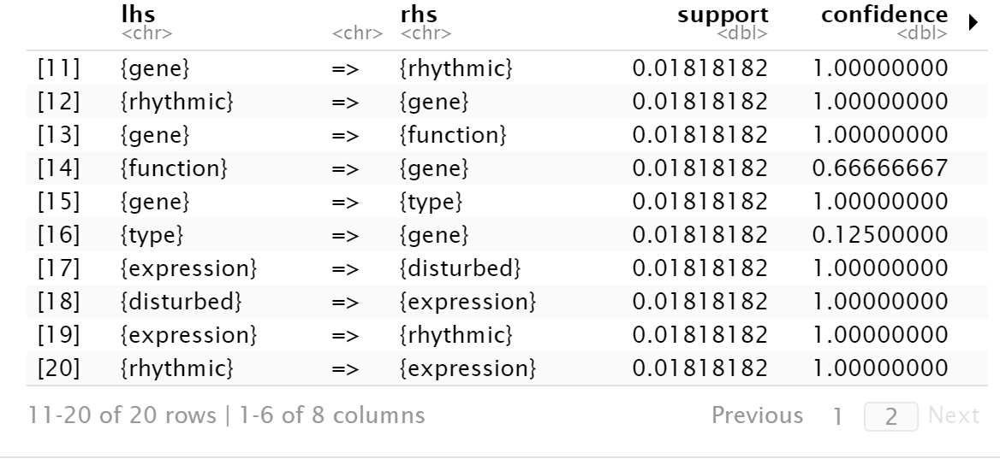
Sort by Support
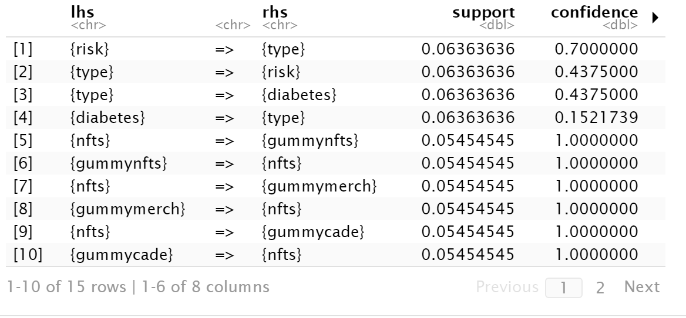
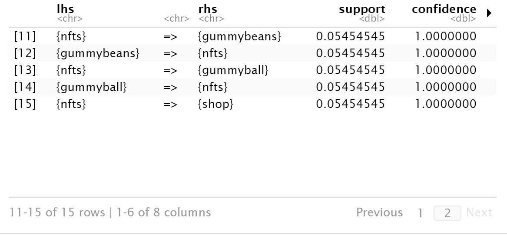
Sort by Lift
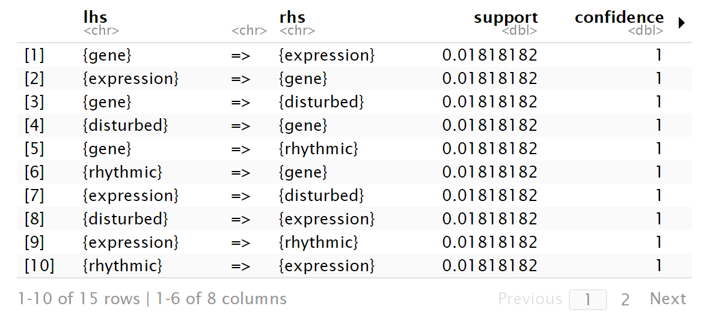
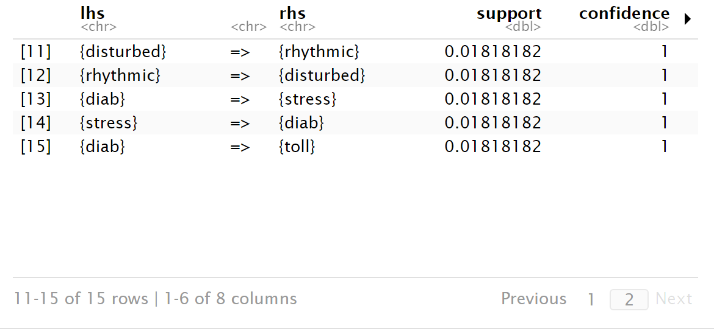
Sort by Confidence
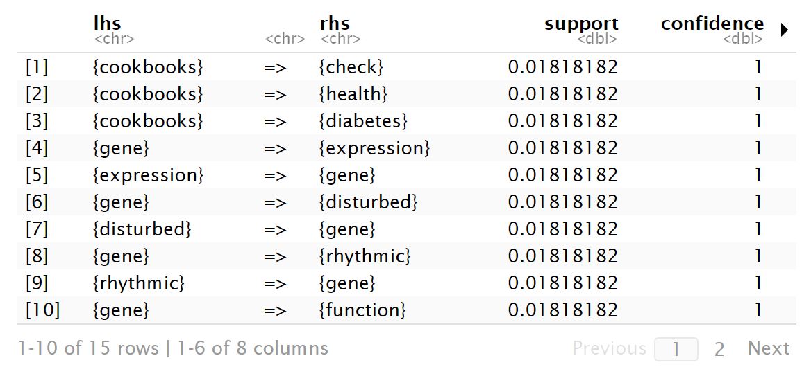
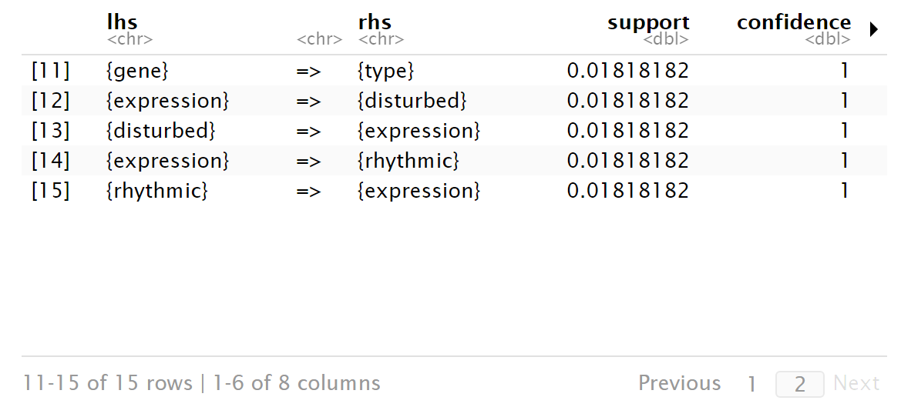
|
I used three measures: Support, Confidence and Lift to conduct ARM on the transaction dataset.
library(arules)
library(arules)
library(jsonlite)
library(streamR)
library(rjson)
library(tokenizers)
library(plyr)
library(dplyr)
library(ggplot2)
library(stringr)
library(arulesViz)
library(igraph)
library(httpuv)
library(openssl)
library(visNetwork)
library(networkD3)
library(magrittr)
setwd("E:/GU/501/ARM")
```
```{r}
TweetTrans = read.transactions("TweetResults.csv",
rm.duplicates = FALSE,
format = "basket",
sep=","
## cols =
)
inspect(TweetTrans)
```
```{r}
## See the words that occur the most
Sample_Trans = sample(TweetTrans, 3)
summary(Sample_Trans)
## Read the transactions data into a dataframe
TweetDF = read.csv("TweetResults.csv",
header = FALSE, sep = ",")
head(TweetDF)
str(TweetDF)
## Convert all columns to char
TweetDF=TweetDF %>% mutate_all(as.character)
str(TweetDF)
```
```{r}
# We can now remove certain words
TweetDF[TweetDF == "t.co"] = ""
TweetDF[TweetDF == "rt"] = ""
TweetDF[TweetDF == "http"] = ""
TweetDF[TweetDF == "https"] = ""
TweetDF
## Clean with grepl - every row in each column
MyDF=NULL
MyDF2=NULL
for (i in 1:ncol(TweetDF)){
MyList=c()
MyList2=c() # each list is a column of logicals ...
MyList=c(MyList,grepl("[[:digit:]]", TweetDF[[i]]))
MyDF=cbind(MyDF,MyList) ## create a logical DF
MyList2=c(MyList2,(nchar(TweetDF[[i]]) less than 4 | nchar(TweetDF[[i]])greater than 11))
MyDF2=cbind(MyDF2,MyList2)
## TRUE is when a cell has a word that contains digits
}
## For all TRUE, replace with blank
TweetDF[MyDF] = ""
TweetDF[MyDF2] = ""
head(TweetDF,10)
```
```{r}
# Now we save the dataframe using the write table command
library(arules)
TweetTrans=read.transactions("UpdatedTweetFile.csv", sep =",", format("basket"), rm.duplicates = TRUE,cols = NULL)
inspect(TweetTrans)
```
```{r}
library(arules)
rules= arules::apriori(TweetTrans, parameter = list(support=0.01,confidence=0.004,minlen=2))
inspect(rules[1:20])
```
```{r}
SortedRulesC=sort(rules, by="confidence", decreasing = TRUE)
inspect(SortedRulesC[1:15])
```
```{r}
SortedRulesL=sort(rules, by="lift", decreasing = TRUE)
inspect(SortedRulesL[1:15])
```
```{r}
SortedRulesS=sort(rules, by="support", decreasing = TRUE)
inspect(SortedRulesS[1:15])
Support shows how often items in lhs and items in rhs occur together relative to all transaction.
Confidence shows how often items in lhs and items in rhs occur together-relative to transactions that contain rhs
Lift shows the dependence of lhs and rhs. When lift=1, indicating lhs and rhs are independent. When lift less than 1, it indicates that lhs and rhs are negatively correlated.When lift greater than 1, it indicates that lhs and rhs are positively correlated.
|
|
Network Visualization
Igraph preview (Support)
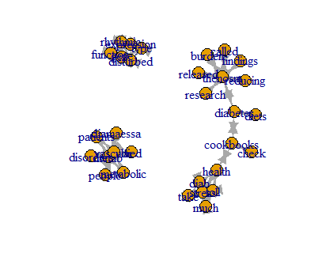
Igraph preview (Confidence)
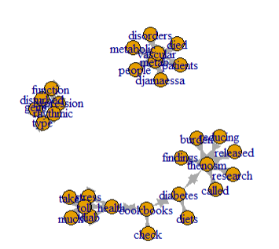
NetD3
NetD3 is an interacive graph. You can download it from this html document.
NetD3_DCR2019_worldNewsL_2021.html
VisNetwork graph
VisNetwork is also inteeractve graphs. Here is the preview of them and you can also have a look at the interactive graph in end of the html document. The html document also contain all the code used in ploting network visualization.
Basic-ARM-R-Code.html
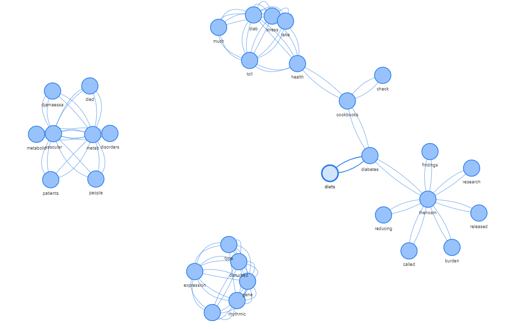
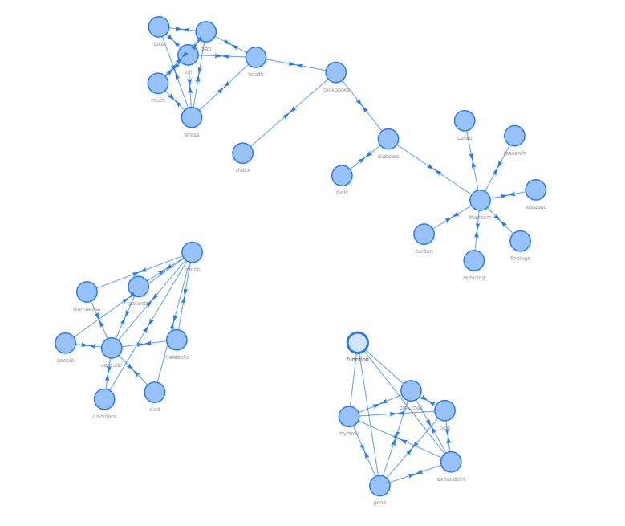
|
Before we plot the network visualization, we need to build nodes and edges
#############Build a NetworkD3 edgeList and nodeList############
```{r}
edgeList=Rules_Sup
# Create a graph. Use simplyfy to ensure that there are no duplicated edges or self loops
MyGraph = igraph::simplify(igraph::graph.data.frame(edgeList, directed=TRUE))
plot(MyGraph)
```
###### BUILD THE NODES & EDGES ##############
```{r}
setwd("E:/GU/501/ARM")
edgeList=Rules_Sup
MyGraph = igraph::simplify(igraph::graph.data.frame(edgeList, directed=TRUE))
nodeList = data.frame(ID = c(0:(igraph::vcount(MyGraph) - 1)),
# because networkD3 library requires IDs to start at 0
nName = igraph::V(MyGraph)$name)
## Node Degree
nodeList = cbind(nodeList, nodeDegree=igraph::degree(MyGraph,
v = igraph::V(MyGraph), mode = "all"))
## Betweenness
BetweenNess = igraph::betweenness(MyGraph,
v = igraph::V(MyGraph),
directed = TRUE)
nodeList = cbind(nodeList, nodeBetweenness=BetweenNess)
## Min-Max Normalization
BetweenNess.norm = (BetweenNess - min(BetweenNess))/(max(BetweenNess) - min(BetweenNess))
#write.csv(nodeList,file = "E:/GU/501/ARM/TinyNodeDoc.csv")
head(nodeList)
head(edgeList)
```
########## BUILD THE EDGES #############
```{r}
edgeList=Rules_Sup
getNodeID = function(x){
which(x == igraph::V(MyGraph)$name) - 1 #IDs start at 0
}
```
```{r}
## UPDATE THIS !! depending on # choice
(getNodeID("health"))
edgeList = plyr::ddply(
Rules_Sup, .variables = c("SourceName", "TargetName" , "Weight"),
function (x) data.frame(SourceID = getNodeID(x$SourceName),
TargetID = getNodeID(x$TargetName)))
head(edgeList)
nrow(edgeList)
```
```{r}
##Dice Sim
#the number of common neighbors divided by the sum of the degrees
#of the vertices. Method dice calculates the pairwise Dice similarities
#for some (or all) of the vertices.
DiceSim = igraph::similarity.dice(MyGraph, vids = igraph::V(MyGraph), mode = "all")
head(DiceSim)
#Create data frame that contains the Dice similarity between any two vertices
F1 = function(x) {data.frame(diceSim = DiceSim[x$SourceID +1, x$TargetID + 1])}
#Place a new column in edgeList with the Dice Sim
head(edgeList)
edgeList = plyr::ddply(edgeList,
.variables=c("SourceName", "TargetName", "Weight",
"SourceID", "TargetID"),
function(x) data.frame(F1(x)))
head(edgeList)
#write.csv(edgeList,file = "E:/GU/501/ARM/TinyEdgeDoc.csv")
```
preview of nodeList
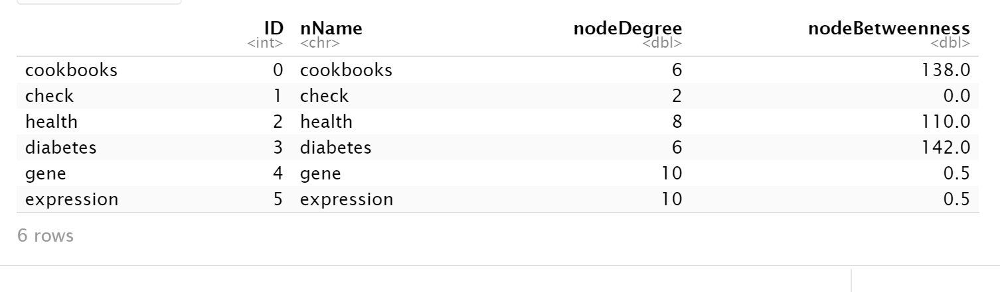
preview of edgeList
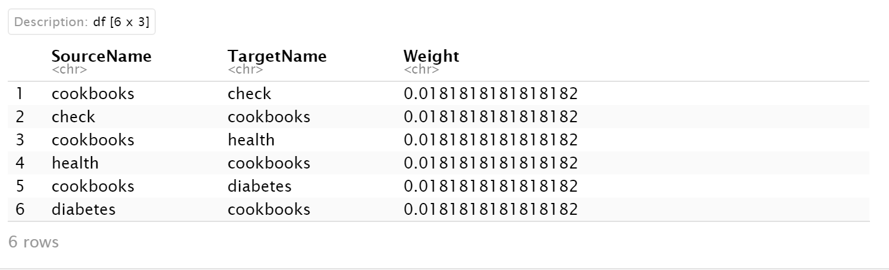
Then we can plot NetworkD3 object and igraph.
####color####
```{r}
COLOR_P = colorRampPalette(c("#00FF00", "#FF0000"),
bias = nrow(edgeList), space = "rgb",
interpolate = "linear")
COLOR_P
colCodes = COLOR_P(length(unique(edgeList$diceSim)))
edges_col = sapply(edgeList$diceSim,
function(x) colCodes[which(sort(unique(edgeList$diceSim)) == x)])
nrow(edges_col)
```
## NetworkD3 Object
```{r}
D3_network_Tweets = networkD3::forceNetwork(
Links = edgeList, # data frame that contains info about edges
Nodes = nodeList, # data frame that contains info about nodes
Source = "SourceID", # ID of source node
Target = "TargetID", # ID of target node
Value = "Weight", # value from the edge list (data frame) that will be used to value/weight relationship amongst nodes
NodeID = "nName", # value from the node list (data frame) that contains node description we want to use (e.g., node name)
Nodesize = "nodeBetweenness", # value from the node list (data frame) that contains value we want to use for a node size
Group = "nodeDegree", # value from the node list (data frame) that contains value we want to use for node color
height = 700, # Size of the plot (vertical)
width = 900, # Size of the plot (horizontal)
fontSize = 20, # Font size
linkDistance = networkD3::JS("function(d) { return d.value*1000; }"), # Function to determine distance between any two nodes, uses variables already defined in forceNetwork function (not variables from a data frame)
linkWidth = networkD3::JS("function(d) { return d.value*5; }"),# Function to determine link/edge thickness, uses variables already defined in forceNetwork function (not variables from a data frame)
opacity = 5, # opacity
zoom = TRUE, # ability to zoom when click on the node
opacityNoHover = 5, # opacity of labels when static
linkColour = "red" ###"edges_col"red"# edge colors
)
```
```{r}
# Plot network
#D3_network_Tweets
# Save network as html file
networkD3::saveNetwork(D3_network_Tweets,
"NetD3_DCR2019_worldNewsL_2021.html", selfcontained = TRUE)
```
Code used in plotting Visnetwork
edges = data.frame(from = edgeList$SourceID, to = edgeList$TargetID, weight = edgeList$Weight)
nodes= data.frame(id=nodeList$ID,label=nodeList$nName)
visNetwork(nodes, edges, layout = "layout_with_fr",
arrows="middle")
edges = mutate(edges, width = edges$weight, length=20)
visNetwork(nodes, edges) %>%
visIgraphLayout(layout = "layout_with_fr") %>%
visEdges(arrows = "middle")
SUMMARY
Networks are mathematical graphs, with vertices (nodes) and edges. These three types of networks all show that the data I collected from Twitter about diabetes can be divided into three clusters. Each clusters don't have much strong reltionship with each other, even undirected relationship.
|